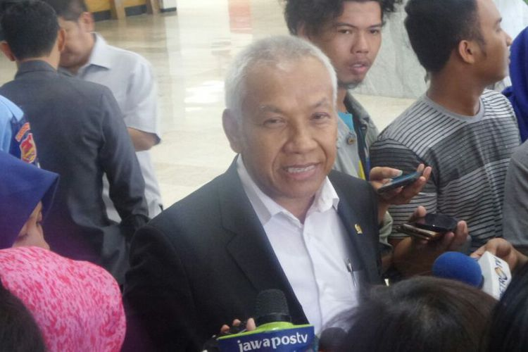
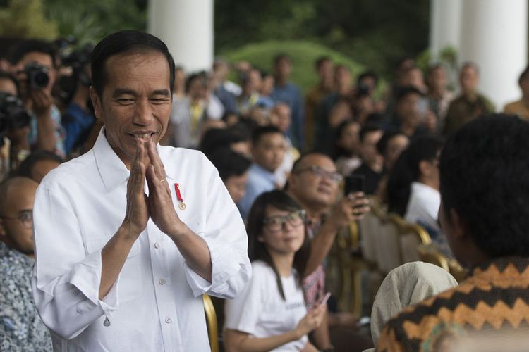
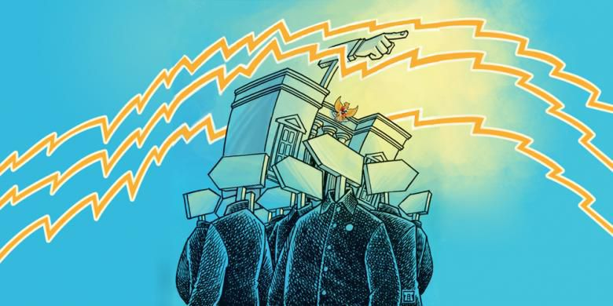
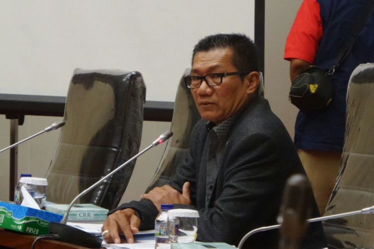
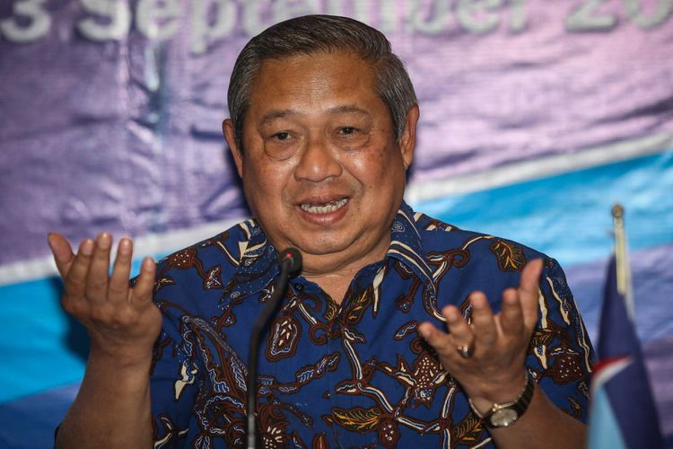

| MBC News | |||||||||||||||||||||||||||||||||||||||||||||||||||||||||||||||||||||||||||||||||||||||||||||||||||
| NATIONAL | REGIONAL | POLITICS | ECONOMY | ENTERTAINMENT | TECHNOLOGY | SPORT | TRAVEL | HEALTH | |||||||||||||||||||||||||||||||||||||||||||||||||||||||||||||||||||||||||||||||||||||||||||
Pimpinan DPR: Rp 601 Miliar untuk Perencanaan Pembangunan ParlemenWakil Ketua DPR RI Agus Hermanto menyebutkan, anggaran Rp 601 miliar merupakan anggaran untuk perencanaan penataan Kompleks Parlemen, salah satunya pembangunan gedung baru. "Sekarang ini keluar anggaran Rp 601 miliar ini untuk konsultan perencanaan. Tidak hanya perencanaan gedung, tapi meliputi seluruh perencanaan dari kawasan parlemen," kata Agus di Kompleks Parlemen, Senayan, Jakarta, Kamis (26/10/2017). |
Jokowi Persilakan DPR jika Ingin Merevisi UU OrmasPemerintah terbuka terhadap usulan untuk merevisi Undang-Undang tentang Organisasi Kemasyarakatan setelah pengesahan Peraturan Pemerintah Pengganti Undang-Undang Nomor 2 Tahun 2017 tentang Ormas menjadi undang-undang. "Kalau ada yang ingin direvisi, ya silakan di tahapan berikutnya," ujar Presiden Joko Widodo saat dicegat wartawan seusai menghadiri Rapat Kerja Nasional Walubi 2017 di JIExpo, Kemayoran, Jakarta Pusat, Kamis (26/10/2017). |
||||||||||||||||||||||||||||||||||||||||||||||||||||||||||||||||||||||||||||||||||||||||||||||||||
Partai-partai Baru Pemilu 2019, Sekadar Penggembira?Tahaan pendaftaran peserta dan pelengkapan dokumen bagi partai politik peserta Pemilihan Umum 2019 telah ditutup Komisi Pemilihan Umum (KPU). Terdapat 14 partai politik yang lolos seleksi dengan empat partai peserta baru yakni Partai Persatuan Indonesia (Perindo), Partai Solidaritas Indonesia (PSI), Partai Berkarya, dan Partai Gerakan Perubahan Indonesia (Partai Garuda). |
|||||||||||||||||||||||||||||||||||||||||||||||||||||||||||||||||||||||||||||||||||||||||||||||||||
KPK Kembali Tak Hadir, Ini yang Akan Dilakukan Pansus AngketKomisi Pemberantasan Korupsi ( KPK) kembali tak memenuhi undangan rapat dengar pendapat (RDP) Panitia Khusus Hak Angket KPK di Kompleks Parlemen, Senayan, Jakarta, Kamis (26/10/2017). Kali ini, Sekretaris Jenderal KPK dan Pelaksana Tugas (Plt) Koordinator Unit Kerja Pelacakan Aset dan Pengelolaan Barang Bukti dan Eksekusi (Labuksi) yang tak menghadiri panggilan Pansus. |
|||||||||||||||||||||||||||||||||||||||||||||||||||||||||||||||||||||||||||||||||||||||||||||||||||
SBY: Pemerintah Sudah Janji, Ada 4 Poin UU Ormas yang Perlu RevisiKetua Umum DPP Partai Demokrat Susilo Bambang Yudhoyono (SBY) menyampaikan empat poin yang harus direvisi dari Undang-Undang Organisasi Kemasyarakatan ( UU Ormas). Revisi UU Ormas menyusul disetujuinya Peraturan Pemerintah Pengganti Undang-Undang (Perppu) Nomor 2 Tahun 2017 tentang Ormas pada sidang paripurna DPR. Ia pun mewanti-wanti agar pemerintah menepati janjinya untuk merevisi UU Ormas. |
|||||||||||||||||||||||||||||||||||||||||||||||||||||||||||||||||||||||||||||||||||||||||||||||||||
| MBC News © 2017 | |||||||||||||||||||||||||||||||||||||||||||||||||||||||||||||||||||||||||||||||||||||||||||||||||||
| Minggu | Senin | Selasa | Rabu | Kamis | Jumat | Sabtu |
|---|---|---|---|---|---|---|
| 1 | 2 | 3 | ||||
| 4 | 5 | 6 | 7 | 8 | 9 | 10 |
| 11 | 12 | 13 | 14 | 15 | 16 | 17 |
| 18 | 19 | 20 | 21 | 22 | 23 | 24 |
| 25 | 26 | 27 | 28 | 29 | 30 | 31 |